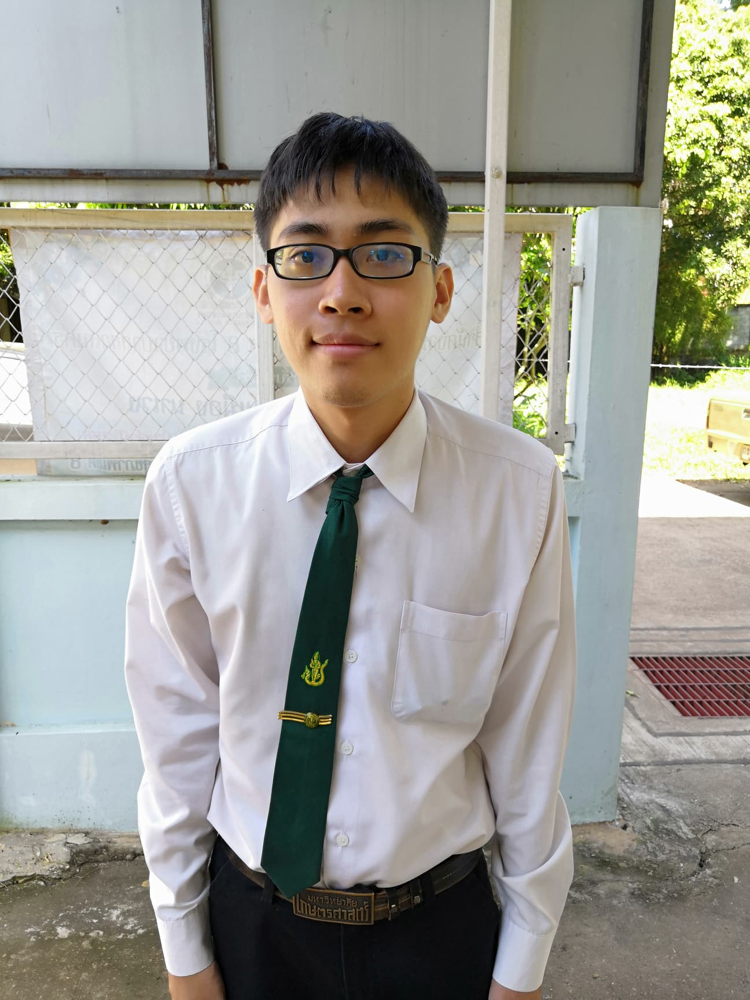

นาย สิทธโชค วงศ์กาฬสินธุ์
ชื่อเล่น: โบ๊ส
สถานะ: นักศึกษา
สถานะภาพสังคม: โสด
รหัสนักศึกษา: 5940205232
นักศึกษาชั้นปีที่: 3
สถานศึกษา: มหาวิทยาลัยเกษตรศาสตร์วิทยาเขตเฉลิมพระเกียรติ จังหวัดสกลนคร
อาหารที่ชอบ: แกงเขียวหวาน
กีฬาที่ชอบ: ไม่มีเป็นพิเศษ
ส่วนสูง: 171 cm
น้ำหนัก: 50 kg
ที่อยู่: 1634/21 ถ.คูเมือง ต.ธาตุเชิงชุม อ.เมือง จ.สกลนคร 47000